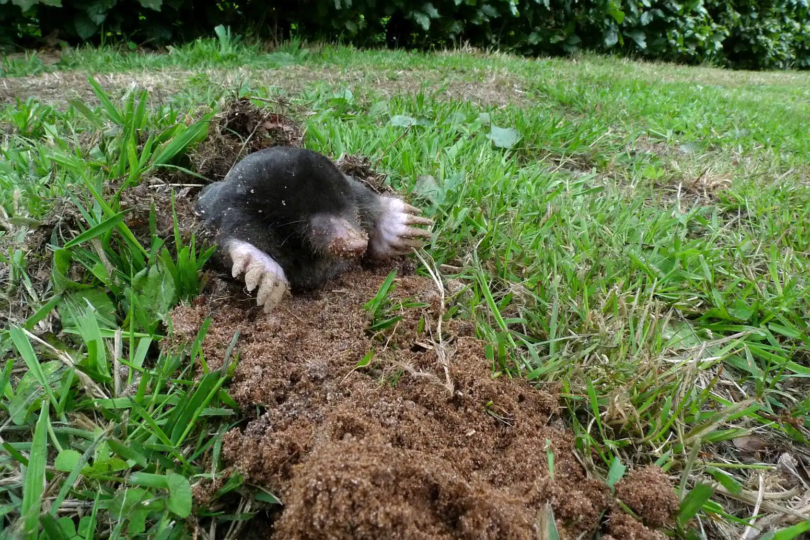
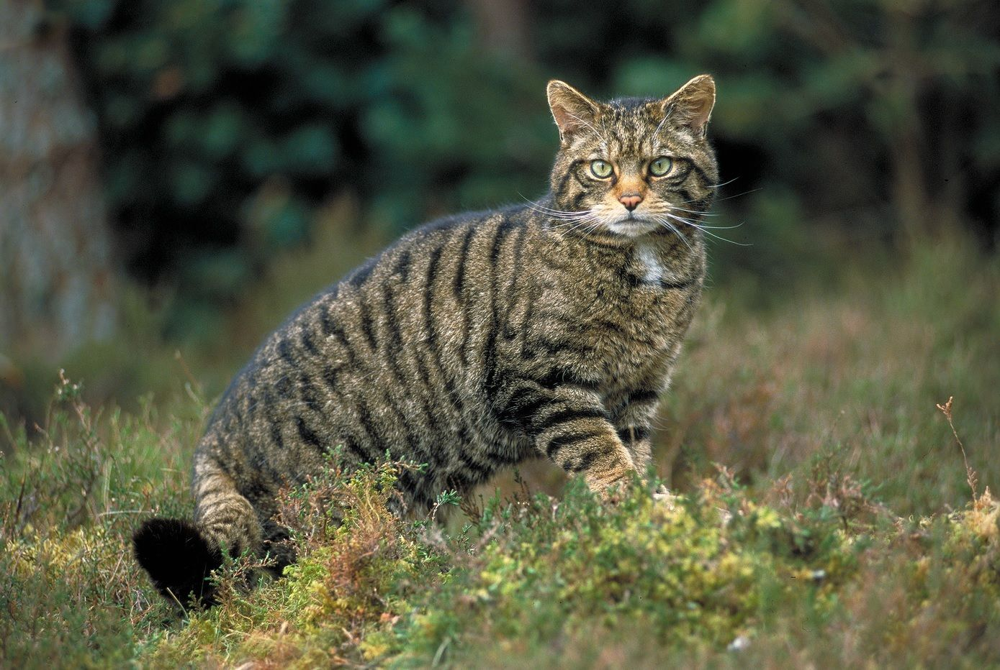

- Lince ibérico
- El felino más amenazado del mundo y uno de los símbolos de la fauna española. Vive principalmente en Andalucía y algunas otras zonas reintroducidas.

- Oso pardo cantábrico
- Habita en la Cordillera Cantábrica y los Pirineos. Es una subespecie del oso pardo, en peligro de extinción.
- Cabra montesa
- Emblemática de las montañas españolas, como Sierra Nevada, los Pirineos y Gredos, es experta en escalar terrenos abruptos.
- Jabalí
- Común en bosques y áreas rurales de toda España, este mamífero adaptable es omnipresente en la península.
- Ciervo ibérico
- Una subespecie del ciervo europeo, muy abundante en bosques y dehesas, especialmente en la Sierra Morena y los Montes de Toledo.
- Gineta
- Un pequeño carnívoro con un cuerpo alargado y un pelaje moteado, que es principalmente nocturno y habita en bosques y áreas rurales.
- Zorro rojo
- Muy extendido por toda España, se adapta a casi cualquier hábitat, desde bosques hasta áreas urbanas.
- Topo ibérico
- Una especie de topo exclusiva de la península ibérica, adaptada a cavar túneles en suelos blandos.

- Nutria europea
- Este carnívoro semiacuático se encuentra en ríos y humedales. Es un buen indicador de la calidad del agua en los ecosistemas.

- Gato montés
- Parecido a un gato doméstico pero más robusto, vive en bosques y zonas rurales de toda la península.
